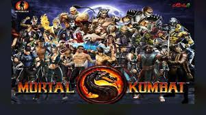
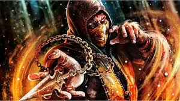
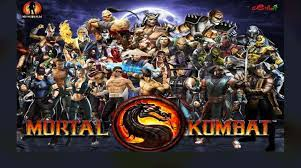
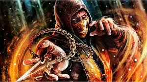

MORTAL KOMBAT
Mortal Kombat es una franquicia de videojuegos de lucha creada por Ed Boon y John Tobias en 1992. Las cuatro primeras entregas fueron distribuidas por Midway Games y lanzadas principalmente en máquinas arcade; posteriormente estuvieron disponibles en consolas domésticas. Shao Kahn es un personaje ficticio de la serie de videojuegos de lucha Mortal Kombat que suele tener el papel de jefe o anunciador.
 


